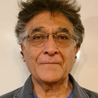

Experiencia técnica verificable
Más de cuatro décadas de trabajo directo en plantas metalúrgicas, proyectos de exploración y operaciones en Chile, Argentina, Perú y México. Cada recomendación proviene de experiencia de campo, no de teoría académica.
+40 años de experiencia en minería de oro y cobre, Chile y Latinoamérica
Criterio técnico respaldado por experiencia en proyectos de alto impacto en minería de metales y metalurgia extractiva.
Más de cuatro décadas de trabajo directo en plantas metalúrgicas, proyectos de exploración y operaciones en Chile, Argentina, Perú y México. Cada recomendación proviene de experiencia de campo, no de teoría académica.
La relación comienza con un diagnóstico inicial estructurado: revisamos los antecedentes técnicos bajo NDA estricto y entregamos una primera evaluación de viabilidad antes de formalizar cualquier compromiso económico.
No representamos tecnologías ni proveedores. Nuestra recomendación técnica es independiente: evaluamos la solución óptima para cada proyecto, no la más conveniente comercialmente para terceros.
Integramos criterios de sustentabilidad operacional y optimización energética en cada evaluación. Un proyecto técnicamente sólido también considera eficiencia, impacto ambiental y viabilidad de largo plazo.
Soluciones técnicas especializadas para cada etapa del ciclo minero — desde la evaluación inicial hasta la optimización operacional.
Acompañamos a propietarios de activos mineros en cada etapa del proceso de valorización: desde el diagnóstico técnico inicial hasta la preparación para venta, asociación o financiamiento. Diagnóstico inicial SIN COSTO, sujeto a NDA.
Foco: Valorización de propiedades · Adquisición de minas y plantas · Diagnóstico técnico · Estudios de prefactibilidad
Diagnóstico técnico-operacional profundo orientado a resultados concretos. 4 etapas en 6–8 semanas: identificar brechas críticas, incrementar producción, reducir costos e integrar mina–planta. Impacto económico estimado: $3M a $10M anuales.
Foco: Integración mina–planta · Reducción de costos · Aumento de throughput · Recuperación metalúrgica
Asistencia técnica inmediata para resolver problemas operacionales críticos: caída de recuperación, fallas en circuitos de lixiviación, flotación o Merrill Crowe. Disponible 24/7 en modalidad remota, presencial o híbrida.
Foco: Respuesta 24/7 · Diagnóstico de emergencia · Lixiviación · Flotación · Merrill Crowe
Programas de formación técnica práctica para equipos de operación y supervisión — basados en casos reales de faenas, adaptables a cada operación. Contenidos: flotación, lixiviación, Merrill Crowe, control operacional y seguridad.
Foco: Formación in-situ · Flotación y lixiviación · Merrill Crowe · Evaluación de competencias
No innovación por moda — mejoras técnicas concretas con impacto medible en recuperación, consumo y gestión de riesgos.
Evaluación e implementación de tecnologías emergentes en conminución de alta presión (HPGR), biohidrometalurgia y flotación columnar — adaptadas a la mineralogía específica de cada yacimiento.
Diagnóstico y reducción de consumo energético específico en molienda, bombeo y ventilación — áreas que representan hasta el 60% de los costos operacionales en una planta concentradora.
Aplicación de mejores prácticas reconocidas internacionalmente: JORC Code, NI 43-101, normas ISO para gestión ambiental y guías de la ICMM para minería responsable en Latinoamérica.
Diseño de circuitos de agua cerrados, gestión técnica de relaves y evaluación de alternativas a reactivos tóxicos — sin comprometer la recuperación metalúrgica.
Estructura clara, confidencialidad garantizada y criterio técnico en cada etapa — desde el primer contacto hasta la entrega del informe final.
Toda relación comercial comienza con la firma de un acuerdo de confidencialidad robusto. La información técnica del proyecto nunca se comparte con terceros ni se utiliza fuera del encargo.
Análisis estructurado de la información técnica disponible: reportes de exploración, resultados de ensayos metalúrgicos, datos operacionales, informes geológicos y estudios previos.
Primera evaluación técnica del proyecto: identificación de brechas, oportunidades y riesgos críticos. Se entrega como documento estructurado antes de definir el alcance completo del trabajo.
Sobre la base del diagnóstico, se elabora una propuesta de trabajo detallada con alcance, metodología, entregables, plazos y honorarios — sin compromisos implícitos previos.
Desarrollo del trabajo con comunicación directa y continua. Los informes son claros, fundamentados y orientados a la toma de decisiones — no documentos de relleno.

Más de cuatro décadas de trayectoria directa en el sector minero-metalúrgico, con participación en operaciones de oro en Chile, Argentina y México — desde estudios de prefactibilidad hasta comisionamiento, puesta en marcha y operación a escala industrial.
Armando Felipe Núñez Cordero es Ingeniero Civil Químico con especialidad en procesamiento metalúrgico de oro. Ha trabajado con Gold Fields, Yamana Gold, Barrick, Homestake y Codelco en proyectos de referencia internacional: Salares Norte, El Peñón, Minera Florida, Gualcamayo, Mercedes y Agua de la Falda. Los proyectos asociados a su trayectoria representan aproximadamente 17–20 millones de onzas de oro en producción o potencial de desarrollo.
El criterio técnico se ha forjado en la resolución de problemas reales: comisionamiento de plantas en entornos complejos, expansiones de capacidad bajo presión operacional, y proyectos de retratamiento de relaves. No es experiencia de laboratorio — es de terreno, con resultados verificables.
Comisionamiento, puesta en marcha y estabilización de planta — circuitos de chancado, molienda, Merrill-Crowe, destoxificación y refinación.
Gestión de operaciones metalúrgicas y expansión de planta, incrementando la capacidad de procesamiento en aproximadamente 10%.
Desarrollo e implementación del Proyecto de Tratamiento de Relaves (~100.000 tpm), extendiendo la vida útil de la operación.
Responsable de operaciones subterráneas y a rajo abierto con procesamiento por lixiviación en pilas y Merrill-Crowe para producción de barras de doré.
Monitoreo técnico y soporte a operaciones de procesamiento de oro.
Soporte técnico en control de procesos y mejora del rendimiento metalúrgico.
Participación en estudios de desarrollo de procesos metalúrgicos.
Participación en estudios de perfil y prefactibilidad: definición de proceso y evaluación metalúrgica.
Desarrollo de ingeniería de factibilidad y evaluación del proyecto.


Análisis y perspectivas sobre minería, metalurgia y gestión de proyectos desde la experiencia operacional.
Publicaremos artículos de análisis sobre optimización metalúrgica, mercados mineros y mejores prácticas del sector.
El primer paso es un diagnóstico inicial estructurado — sin compromiso de honorarios previo. Revisamos los antecedentes técnicos bajo NDA y le entregamos nuestra evaluación de viabilidad.
Respondo personalmente todas las consultas. Si su proyecto requiere confidencialidad estricta, el formulario es la vía más discreta.